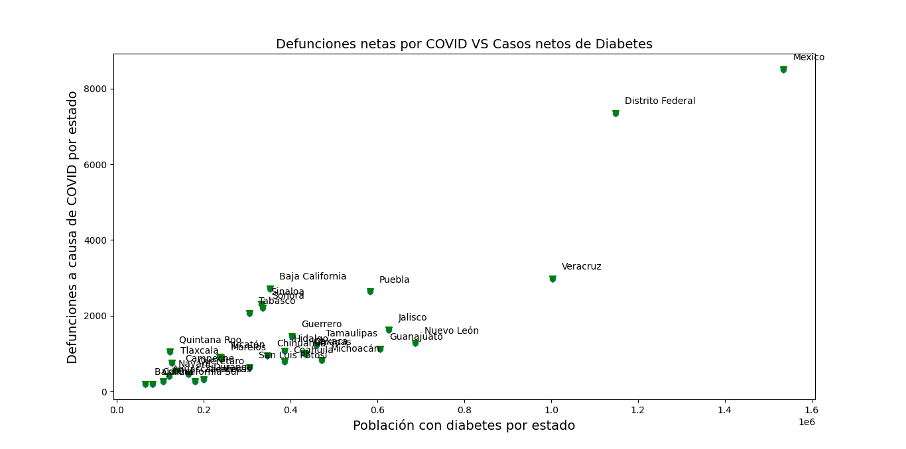
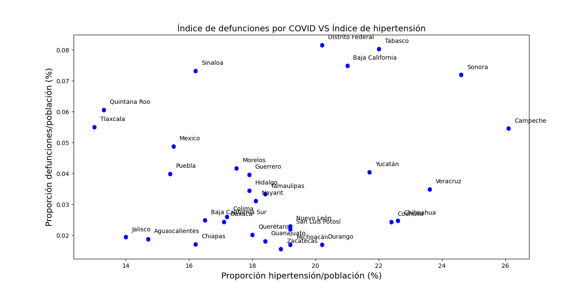
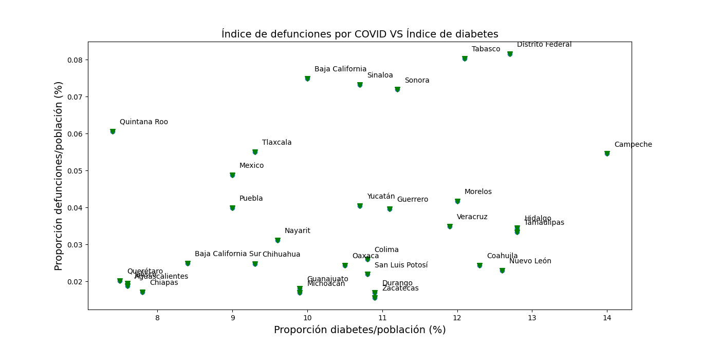
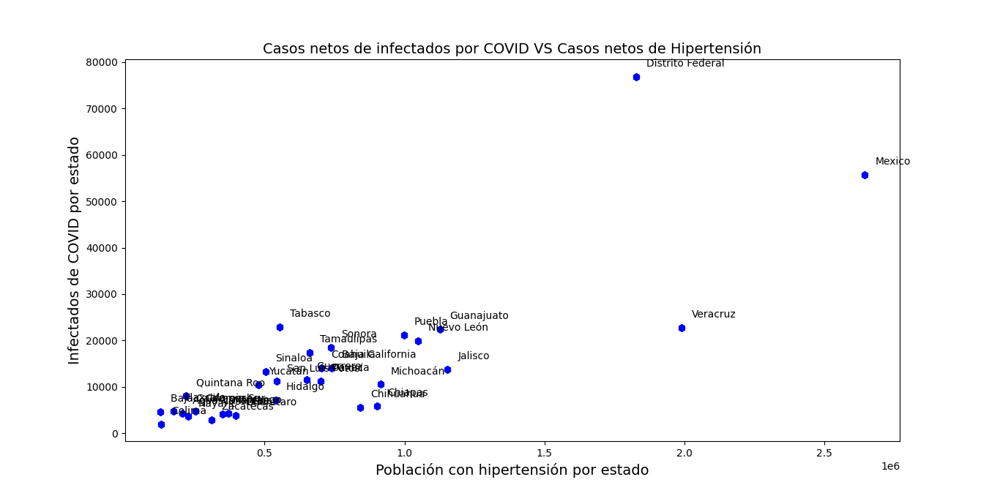
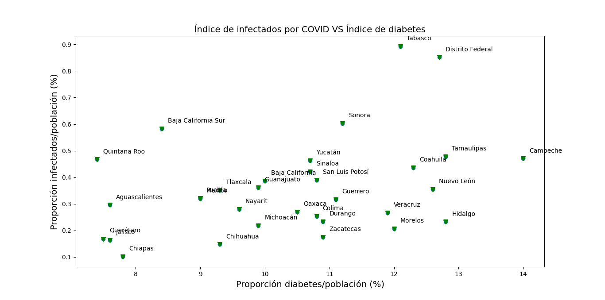

Relación del COVID-19 con Comorbilidades
¿Qué es el COVID-19?
Según la OMS, el COVID-19 es una enfermedad infecciosa que se transmite principalmente por gotas de saliva o secreción de la nariz cuando una persona infectada tose o estornuda. Las personas mayores y aquellas con problemas médicos subyacentes tienen más probabilidades de desarrollar enfermedades graves.
Tanto la obesidad como la diabetes reducen la eficiencia del sistema inmunitario de la persona. La diabetes aumenta el riesgo de infecciones en general. Por lo que surge la duda ¿Existe relación entre las comorbilidades más típicas en el país y la tasa de muertes por infección de COVID-19? Para ello podemos ver las siguientes gráficas.
Defunciones netas por COVID contrastado con los casos netos de cada comorbilidad en cada estado:
Se aprecia una tendencia muy marcada de la cantidad de defunciones respecto al numero de habitantes que padecen de una comorbilidad.
Índice de defunciones por COVID contrastado con el índice de cada comorbilidad en cada estado:
 Únicamente en el caso de la obesidad se aprecia una ligera tendencia mientras que el resto de comorbilidades parecieran tener una relación mínima que se puede despreciar.
Casos netos de infectados por COVID contrastado con los casos netos de cada comorbilidad en cada estado:
Se aprecia una tendencia entre los infectados respecto al numero de habitantes que padecen de una comorbilidad.
Índice de casos de infectados por COVID contrastado con el índice de cada comorbilidad en cada estado:
Hay una tendencia muy dispersa en los índices de infectados respecto a los índices de comorbilidades.